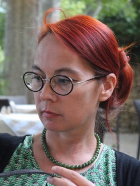

Thuy Kieu Vuong
Thérapeute & Artiste Claveciniste

Sophrologie, Hypnose, EMDR, Méditation
- Sophrologue – ESSA Formations
- Formation à la sophrologie ludique – PSL (Claudia Sanchez et Ricardo Lopez)
- Formée à l'animation d'ateliers Gestion du stress – Gestion du sommeil en Entreprise par Sophro-Trainer
- Certificat de Praticien en Hypnose – B & J-M Caplain
- EMDR – Formée par un membre de l'Institut EMDR France à la technique de Francine Shapiro
- Protocoles MBSR/MBCT – Formée par le Dr Gilles Pentecôte
- "Instructeur en milieu scolaire et éducatif" méditation de pleine conscience et de pleine présence. Association Méditation dans l'Enseignement
Pratiques professionnelles
- Accompagnements individuels adultes
- Accompagnement de groupes de musiciens, comédiens, danseurs – conservatoire du 10ème arrondissement
- Sophrologie et méditation au Centre Ressource Paris VIème – "Aider chaque personne à mieux vivre avec ou après le cancer"
- Atelier Relaxation et Méditation. Studio Keller, Paris 11ème
- Interventions en écoles élémentaires et collège – Paris 11/12
Pratiques personnelles
- Tranches de thérapie (Gestalt, …)
- Supervisions régulières
- Pratique du Yoga Hatha et Ashtanga
- Pratique du Butô
- Retraites de Pleine Conscience au village des Pruniers, monastère bouddhiste zen créé par Thich Nhat Hanh
- Travail psychanalytique freudien
Formation musicale
Clavecin
- Admission au concours externe de professeur d'enseignement artistique. Liste d'aptitude spécialité : musique ; discipline : clavecin
- Diplôme d'Etat de musique ancienne-Clavecin
- Diplôme de soliste en clavecin – Hogeschool voor de Kunsten, Utrecht (Pays-Bas). Classe de Glen Wilson & Siebe Henstra
- Diplôme de perfectionnement – Mention très bien avec les félicitations du jury. CRR Toulouse. Classe de Jan-Willem Jansen
- Médaille d'or à l'unanimité avec les félicitations du jury. CRR Toulouse
- Certificat de fin d'études – Mention très bien à l'unanimité. CRR Grenoble
Accompagnement et Basse Continue
- Centre d'Etudes et de Pratique de la Musique Ancienne (Toulouse)
Orgue
- Première médaille (Classe de Michel Bouvard) – CRR Toulouse
Formations complémentaires
- Harmonie - Histoire de la musique
- Musique Electro-acoustique, classe de Xavier Garcia
Concerts et spectacles (extraits)
- Concerts solo clavecin et projections d'images sur des musiques du répertoire pianistique, arrangements Thuy Kieu Vuong
- Tournée à Los Angeles avec l'ensemble "La Turbulente"
- Collaboration avec le compositeur Michel Bellier. Pièces pour clavecin
- Création avec la compagnie de danse contemporaine "Mémé banjo" dirigée par Lionel Hoche pour le spectacle "sinuosus". Tournées en France et à l'étranger
- Concert à New York. Intégrale des pièces pour clavecin écrites par David Bartel à Thuy Kieu Vuong
- Concerts-conférence réguliers au musée de la musique de la cité de la Villette
- Travail vidéographique avec la plasticienne Catie de Balmann
- Enregistrement d'une bande sonore pour la chorégraphe Stéphanie Aubin. Musique de Nicolas Frize
- Enregistrement du CD "Aborigène" avec Michel Godard
- Collaboration régulière avec Michel Godard (Serpent et tuba). Cycles d'émissions à France Musiques. Concert en France et à l'étranger avec la formation "Le chant du serpent" (direction : Michel Godard en collaboration avec Jean Tubery, cornet à bouquin)
- Clavecin solo dans un spectacle de danse contemporaine en collaboration avec Michel Raji, danseur-chorégraphe